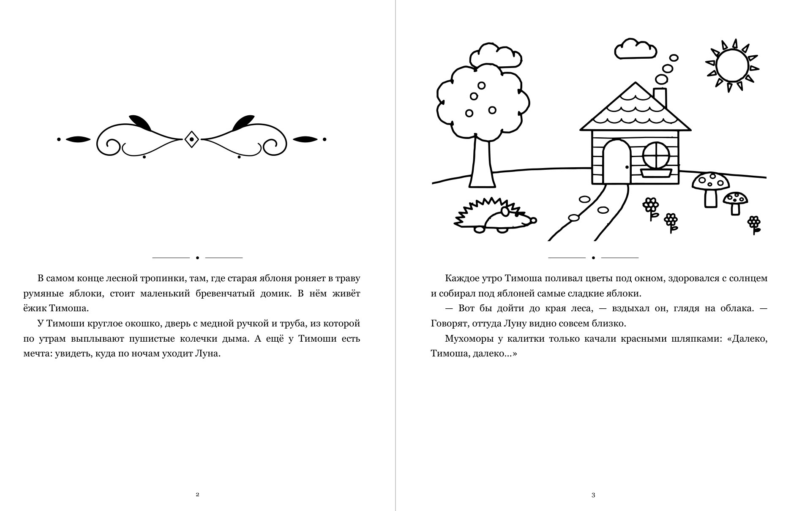
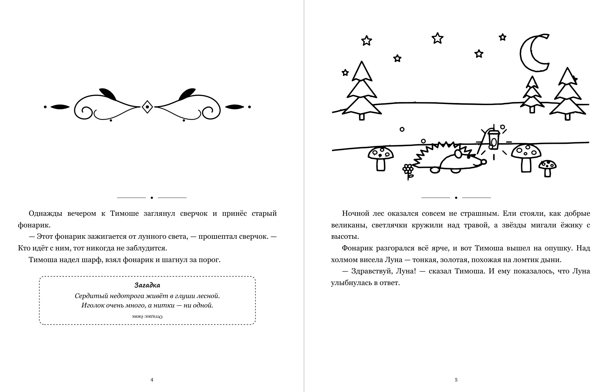
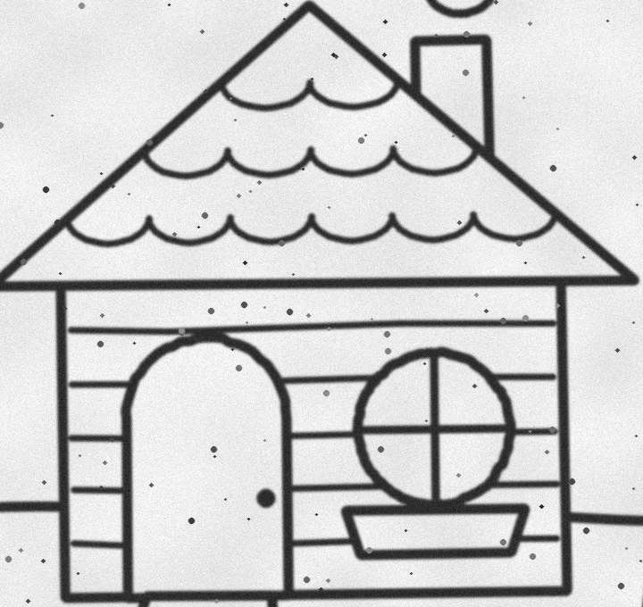
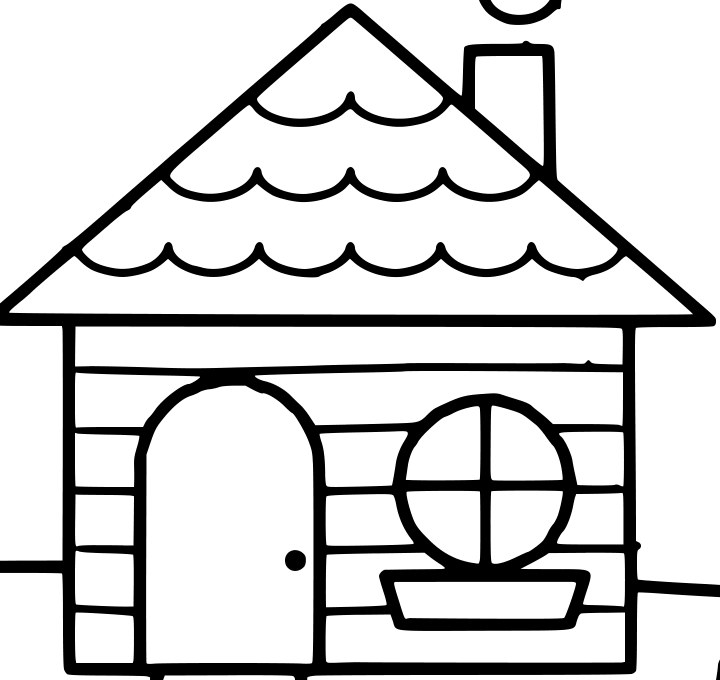
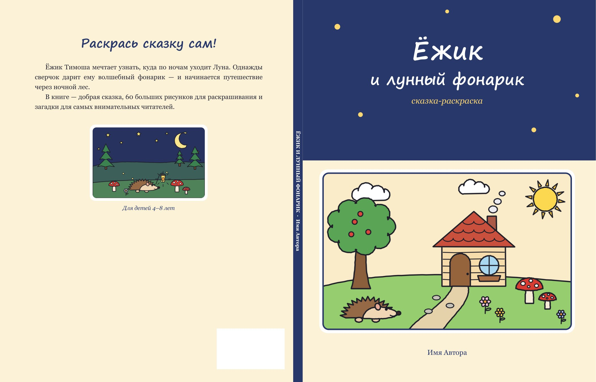
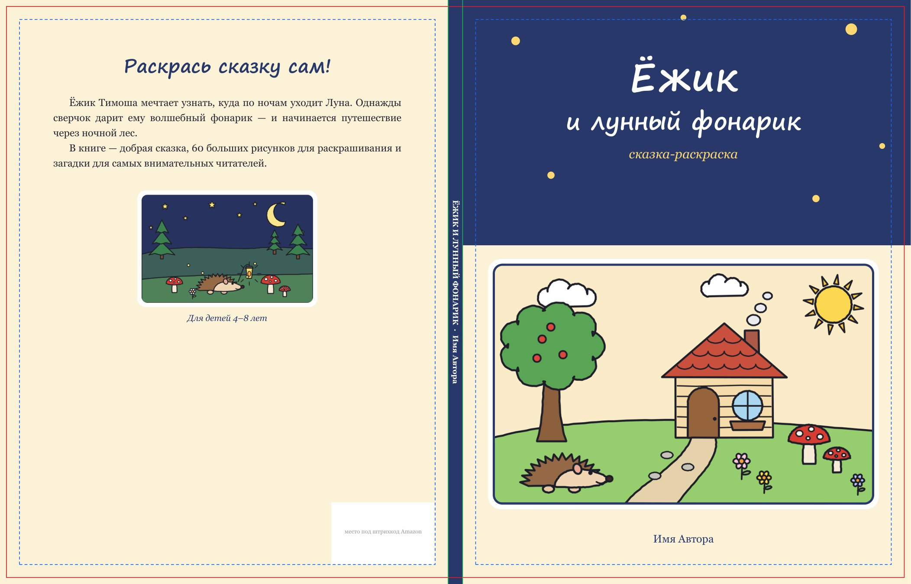

Скачать PDF
Файлы собраны по требованиям KDP: точный размер, все шрифты встроены, блок строго чёрно-белый.

Развороты внутреннего блока
Сетка одна на всю книгу: рисунок и вензель — в верхней половине, текст — в нижней, номер страницы — по центру внизу.


Скан тушью → чистый вектор
Слева — имитация скана: серая бумага, пыль, волоски, пятно, лёгкий перекос. Справа — после выравнивания, чистки и трассировки: ровный замкнутый контур, ничего лишнего. Обычная трассировка, без ИИ — линия художника сохраняется.


Обложка-разворот с корешком
Задняя сторона, корешок и лицевая сторона одним файлом, с вылетами под обрез.


Технические параметры примера
- Блок: 8,5×11 дюймов (215,9×279,4 мм), без вылетов — рисункам вылеты не нужны.
- Поля: внутреннее (у корешка) 0,75″ — больше минимальных 0,5″ для книг 121–150 страниц; внешнее 0,5″, верх 0,5″.
- Цвет блока: только чёрный, без цветных элементов.
- Обложка на 124 страницы, белая бумага: корешок 0,279″ (124 × 0,002252″), полный размер 17,529×11,25″ с вылетами 0,125″.
- Текст на корешке — разрешён KDP при объёме больше 79 страниц; отступы от сгибов соблюдены.
- Цветная иллюстрация на обложке — 300 точек на дюйм; рисунки внутри — вектор.
- Все шрифты встроены в PDF.